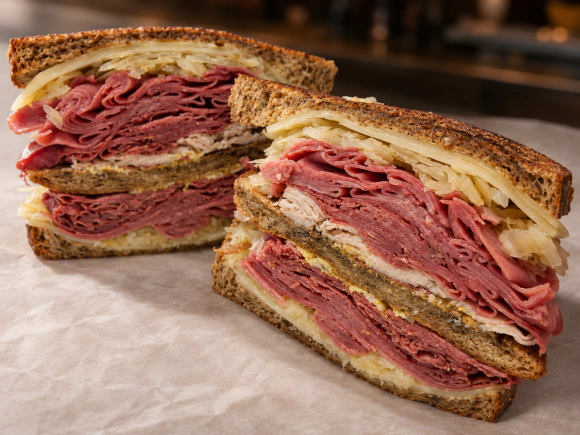
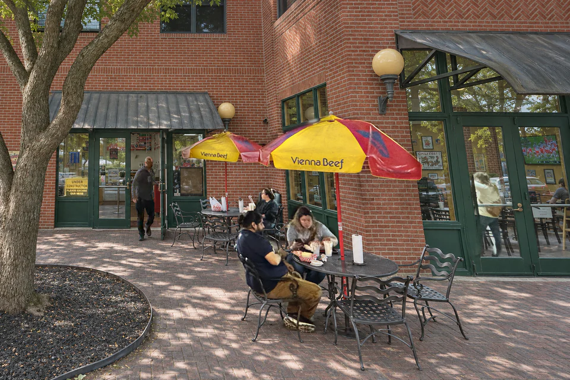
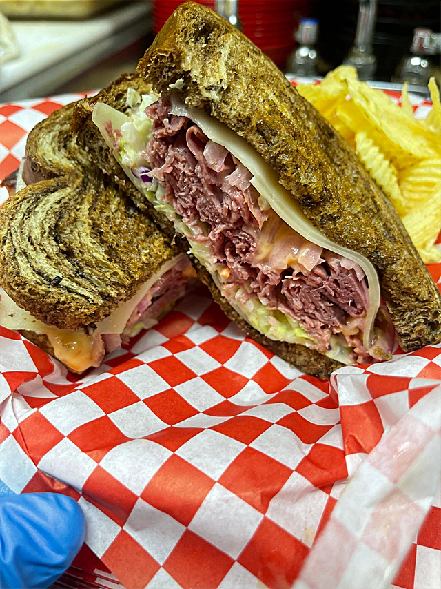
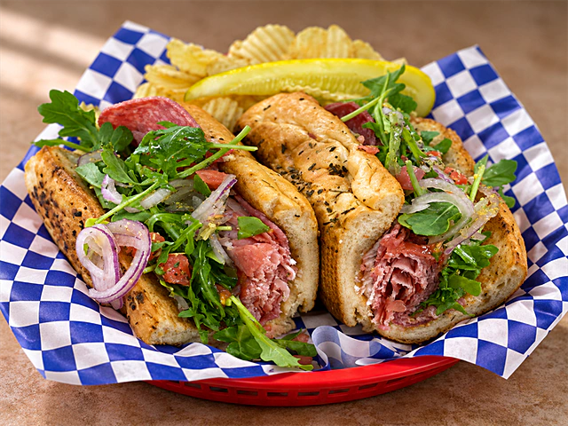
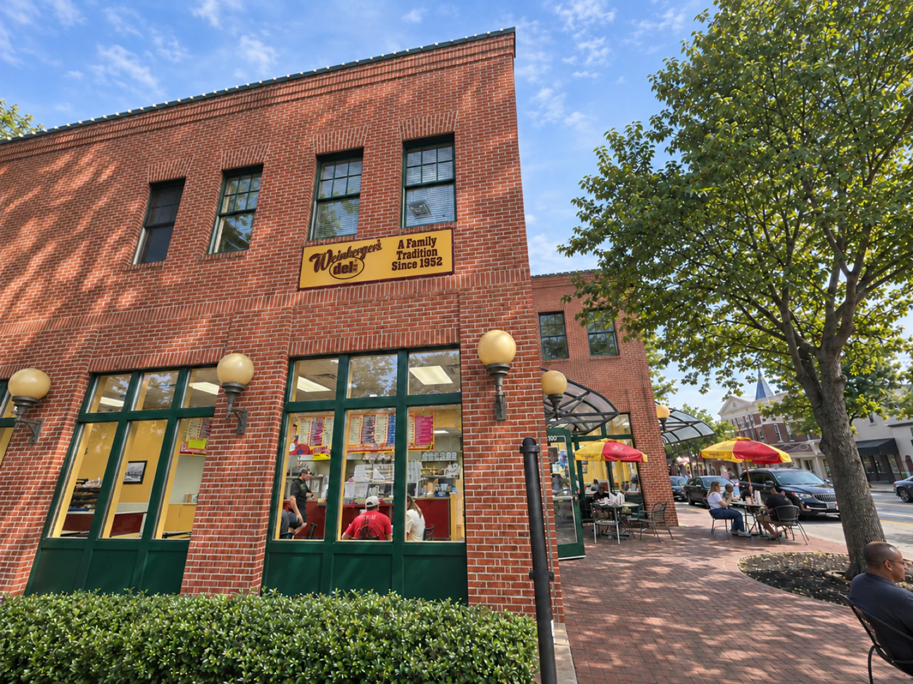

Beef & peppers
Italian Beef
The family’s 1928 recipe. Wet or dry, with sweet, hot or mild peppers.
Choose your beef ↗Chicago, 1952 · Grapevine, 2002
Italian beef, Reubens and Chicago dogs.


Sandwich counter
The family’s 1928 recipe. Wet or dry, with sweet, hot or mild peppers.
Choose your beef ↗
Pastrami, Swiss, creamy slaw, red onion and Russian dressing on grilled marble rye.
Order the Joe King ↗
Prosciutto, sopressata, buffalo mozzarella and peach habanero jam on Italian herbed focaccia.
See Jaybird’s ↗WEINBERGER’S ON FILM
The family’s short film takes you inside the deli on Main Street.
See the Italian beef ↗THE PEOPLE ON THE MENU
When Dan opened in Grapevine, hardly anyone in town knew him. So he started naming sandwiches for his neighbors. The first was the Joe King, for a local community leader.
It’s hot pastrami, Swiss, creamy coleslaw, Russian dressing and red onion on grilled marble rye. You can still order it by name.
COME BY THE DELI
Grapevine, Texas 76051
